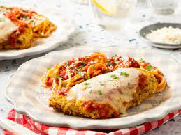

Chicken Parmesan

Description
This is a favourite of mine, a breaded chicken cutlet served with delicious pasta!
I prefer to slice my chicken breasts thin, bake them, and finish them off under the broiler.
You could have any sauce you like with your pasta, I love an alfredo.
This ends up being a pretty quick, tasty meal. Great for week nights or the weekend.
Ingredients
- 2 Chicken Breasts (boneless, skinless)
- Parmesan Cheese
- 1 Egg
- Bread Crumbs
- Tomato Sauce
- Mozzerlla Cheese
Steps
- Turn the oven on to 450 degrees Fahrenheit
- On a cutting board, slice each chicken breast with the knife flat so that each breast renders two thin pieces
- In a bowl, crack the egg and stir the yolk into the egg white
- In a second bowl, place the bread crumbs and thinly shredded parmesan, enough to coat the chicken
- Place each chicken cutlet in the egg and then coat the cutlet with the bread crumb and cheese mixture
- Place the chicken cutlets on a baking sheet and put in the oven for 15 minutes
- After the chicken is cooked, spoon a small amount of tomato sauce on top of each cutlet
- Sprinkle each cutlet with shredded parmesan and mozzerlla
- Set the oven to broil and put the chicken under the broiler until the cheese starts to brown, and remove